Kültür ve Gelenekler
Türkiye
Bayramlar:
Türkiye'de milli bayramlar büyük bir coşku ile kutlanır. 29 Ekim Cumhuriyet Bayramı'nda resmi geçit törenleri, okullarda kutlamalar ve akşamları yapılan fener alayları öne çıkar. 23 Nisan Ulusal Egemenlik ve Çocuk Bayramı, dünyada çocuklara adanmış ilk bayram olarak kutlanırken; 19 Mayıs Atatürk’ü Anma, Gençlik ve Spor Bayramı da gençler için düzenlenen spor etkinlikleri ve gösterilerle kutlanır. Dini bayramlarda ise bayram namazı sonrası insanlar büyüklerini ziyaret eder, çocuklara harçlık ve şeker dağıtılır, sofralarda birlik ve paylaşım ön plana çıkar.
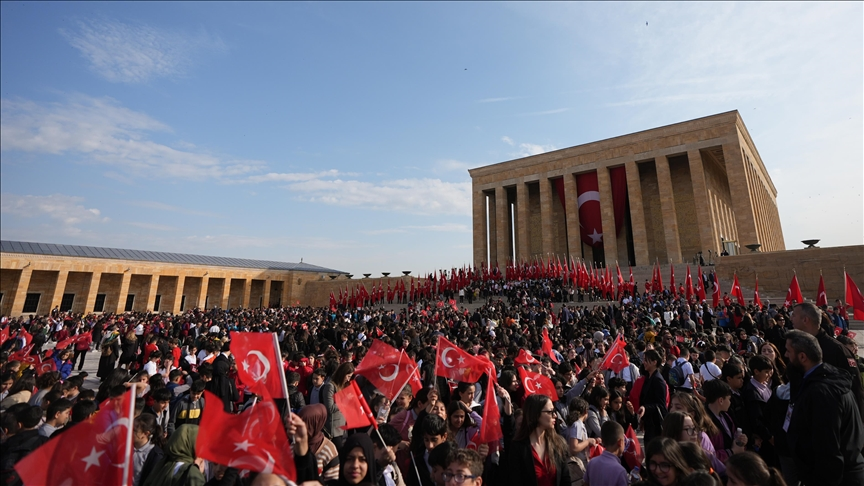
Düğünler:
Türkiye'de düğünler genellikle birkaç gün süren etkinliklerdir. Kına gecesinde gelin, eline kına yakılarak geleneksel türküler eşliğinde uğurlanır. Düğün günü damat alayı ve gelin alma töreniyle başlar, düğün salonunda ya da açık havada devam eden eğlencede halaylar çekilir, çeşitli ikramlar sunulur. Bölgelere göre değişen adetlerle bu özel günler daha da renklidir.
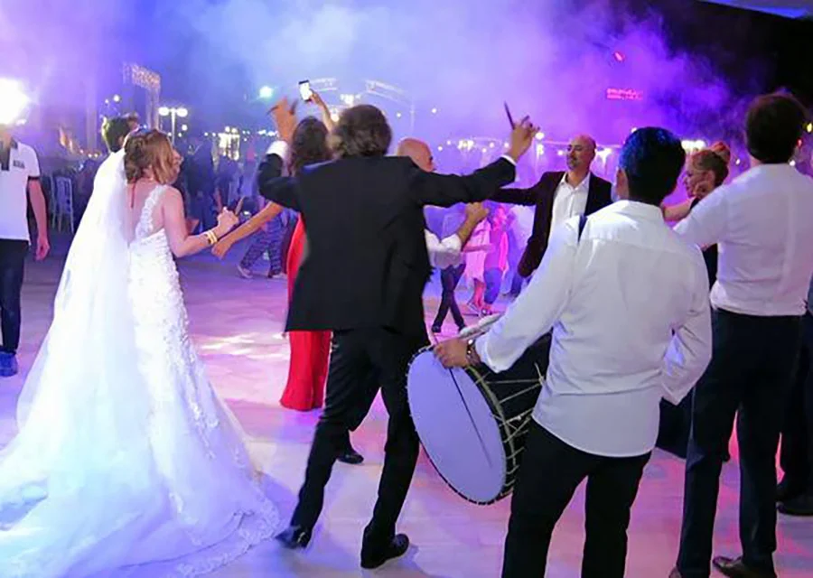
Halk Dansları:
Türkiye’nin dört bir yanında farklı halk dansları vardır. Ege Bölgesi'nde Zeybek, cesaret ve özgürlüğü simgelerken; Güneydoğu'da Halay, kalabalık gruplarla coşkulu bir şekilde icra edilir. Karadeniz Bölgesi'nin hızlı tempolu Horon'u, kemençe eşliğinde oynanır ve adeta bölgenin enerjisini yansıtır. Bu danslar, hem folklorik kimliği hem de toplumsal dayanışmayı temsil eder.
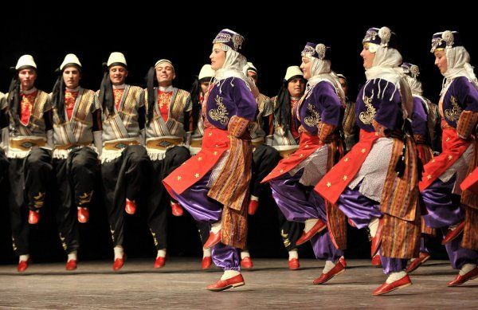
Azerbaycan
Bayramlar:
Azerbaycan'da en önemli milli bayramlardan biri 28 Mayıs Cumhuriyet Günü’dür. Bu gün, 1918'de kurulan Azerbaycan Demokratik Cumhuriyeti'nin ilanını anmak için coşkuyla kutlanır. Ayrıca 18 Ekim Bağımsızlık Günü, halkın ulusal birlik ve özgürlük duygusunu pekiştirdiği bir diğer önemli tarihtir. Dini bayramlar arasında ise Nevruz öne çıkar; baharın gelişini simgeleyen bu bayramda halk, ateş üzerinden atlama, yumurta boyama ve çeşitli gösterilerle kutlamalar yapar.

Çay İkramı:
Azerbaycan kültüründe çay, sadece bir içecek değil, aynı zamanda misafirperverliğin ve dostluğun bir göstergesidir. Gelen misafire ilk sunulan şey çaydır. Nane veya limonla servis edilen çay yanında genellikle reçel ikram edilir. Uzun sohbetlerin ayrılmaz bir parçasıdır.

Mugam:
Mugam, Azerbaycan’a özgü geleneksel ve klasik müzik türlerinden biridir. Usta sanatçılar tarafından icra edilen mugamlar, hem şiirsel hem de doğaçlamaya açık yapılarıyla dikkat çeker. Saz, kamança ve tar gibi geleneksel enstrümanlarla seslendirilir ve kültürel kimliğin önemli bir parçasıdır.

İsviçre
Bayramlar:
İsviçre’nin en önemli milli bayramı 1 Ağustos Ulusal Gündür. Bu günde ülkenin dört bir yanında havai fişek gösterileri, konuşmalar, geleneksel müzikler ve fener alayları düzenlenir. Ayrıca dini bayramlar da yöresel kutlamalarla öne çıkar; Katolik kantonlarında Noel ve Paskalya süslemeleri ve etkinlikleri dikkat çeker.
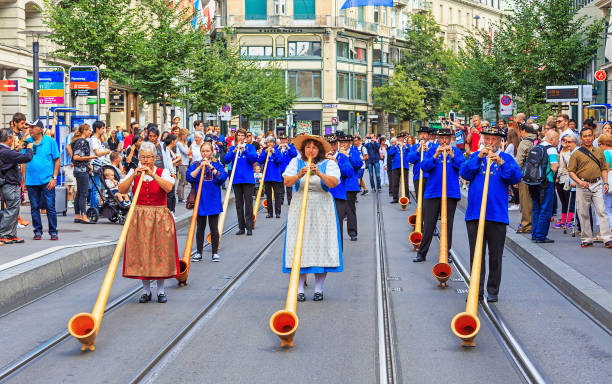
Peynir Fondü:
İsviçre mutfağının en ikonik yemeklerinden biri olan fondü, eritilmiş peynirin ekmek parçalarına batırılarak yenmesiyle servis edilir. Özellikle kış aylarında ailelerin bir araya gelerek paylaştığı sıcak ve samimi bir gelenektir.
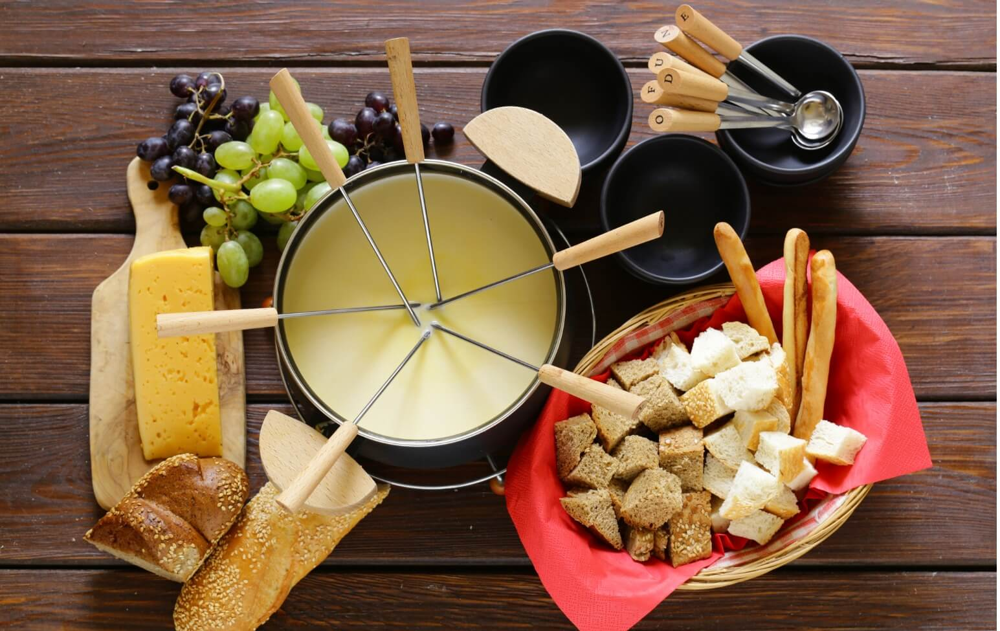
Yodel:
Alp dağları ile özdeşleşmiş olan yodel, inişli çıkışlı seslerle yapılan bir halk müziği tarzıdır. Özellikle kırsal bölgelerde hala icra edilir ve İsviçre kültürel mirasının önemli bir parçasıdır.
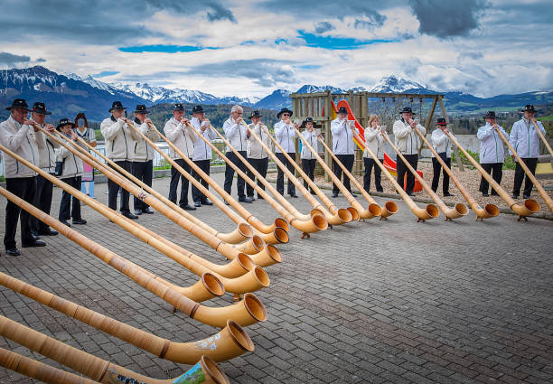
Singapur
Bayramlar:
Singapur'da 9 Ağustos Ulusal Gün, bağımsızlığın kazanıldığı gün olarak her yıl büyük bir askeri geçit, hava gösterileri ve havai fişeklerle kutlanır. Bunun dışında çok kültürlü yapısı sayesinde Çin Yeni Yılı, Deepavali, Hari Raya Aidilfitri ve Noel gibi farklı inançlara dayalı bayramlar da ülke genelinde resmi tatil olarak kabul edilir ve birlikte kutlanır.
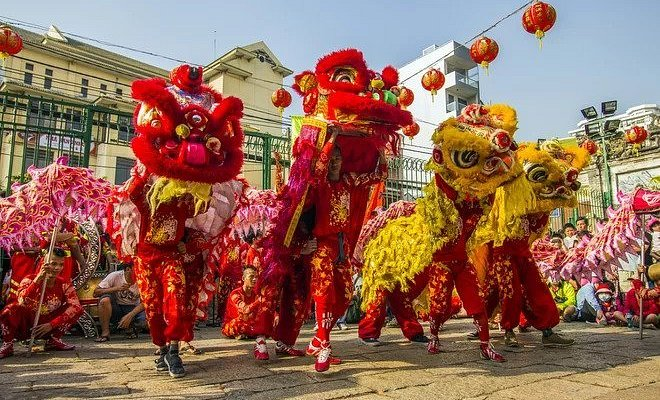
Hawker Yemekleri:
Singapur sokak lezzetleri, farklı etnik grupların mutfaklarını yansıtan zengin bir çeşitliliğe sahiptir. Hawker merkezleri, uygun fiyatlı ve hızlı servis yapılan mekanlardır. Burada Hint, Çin, Malay ve Batı mutfağından örnekler sunulur.
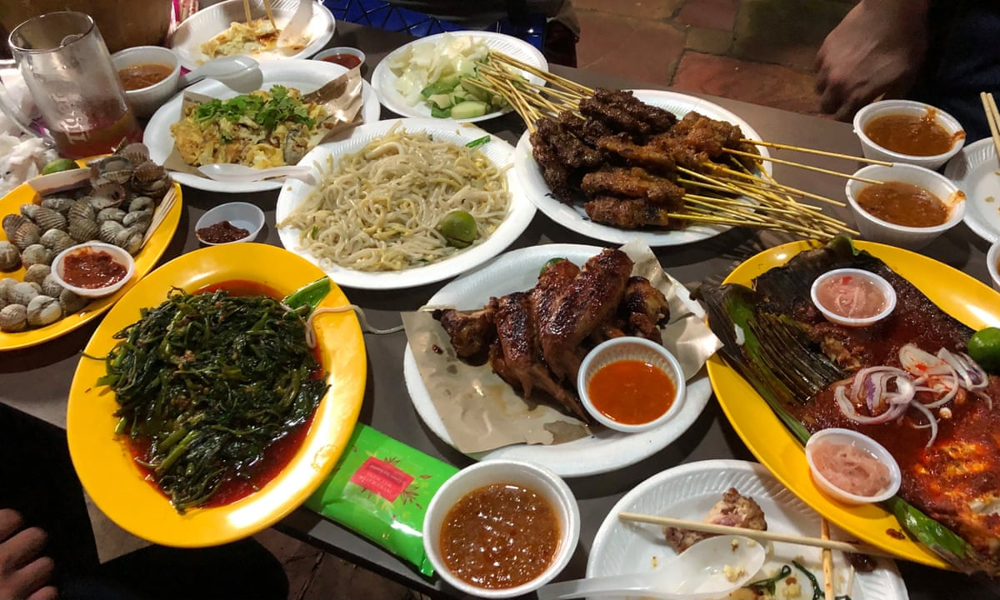
Çok kültürlü festivaller:
Singapur’da farklı dinlere ait festivaller birlikte yaşanır. Hindu topluluğu Deepavali'yi rengarenk süslemeler ve ışıklarla kutlarken; Müslümanlar Hari Raya’da camilere gider, geleneksel kıyafetler giyer. Çin Yeni Yılı ise danslar, kırmızı süslemeler ve aile yemekleriyle kutlanır.
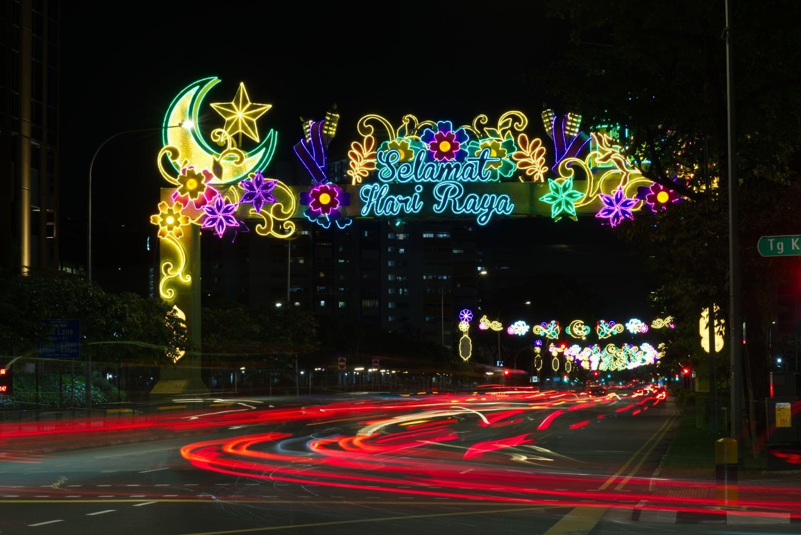
Arjantin
Tango:
Tango, Arjantin’in dünya çapında bilinen en önemli kültürel simgelerinden biridir. 19. yüzyılın sonlarında Buenos Aires'in kenar mahallelerinde doğan bu duygusal dans, zamanla tüm dünyada tanınmış ve UNESCO Somut Olmayan Kültürel Miras listesine dahil edilmiştir. Tango dansı, tutku ve zarafeti yansıtırken, tango müziği ise melankolik tınılarıyla dikkat çeker.

Mate:
Mate çayı, Arjantinlilerin sosyal yaşamında çok önemli bir yere sahiptir. Termosla sıcak su taşıyarak gün boyu tüketilen bu içecek, kalabalık ortamlarda elden ele dolaşır. Bu gelenek sadece bir içecek paylaşımı değil, aynı zamanda dostluğun ve samimiyetin göstergesidir.

Asado:
Asado, Arjantin'e özgü bir barbekü geleneğidir. Etin odun ateşinde yavaş yavaş pişirildiği bu etkinlik, genellikle hafta sonları aile bireylerini ve dostları bir araya getirir. Asado, yemek yemenin ötesinde sosyalleşme ve paylaşım anıdır.

Almanya
Oktoberfest:
Münih’te her yıl düzenlenen Oktoberfest, dünyanın en büyük bira festivalidir. Yöresel kıyafetler, devasa bira çadırları, geleneksel müzikler ve Alman mutfağından lezzetlerle süslenen bu etkinlik, Almanya'nın kültürel kimliğinin simgelerinden biridir.
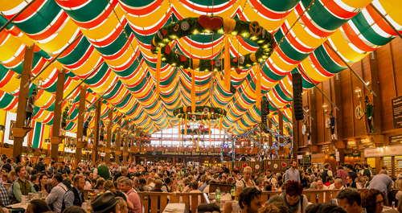
Noel Pazarları:
Almanya’da Aralık ayı boyunca kurulan Noel pazarları, sıcak şarap, el yapımı süsler, oyuncaklar ve yerel yiyeceklerle doludur. Bu pazarlar, geleneksel Noel atmosferini yaşatır ve şehir meydanlarını ışıl ışıl süsler.
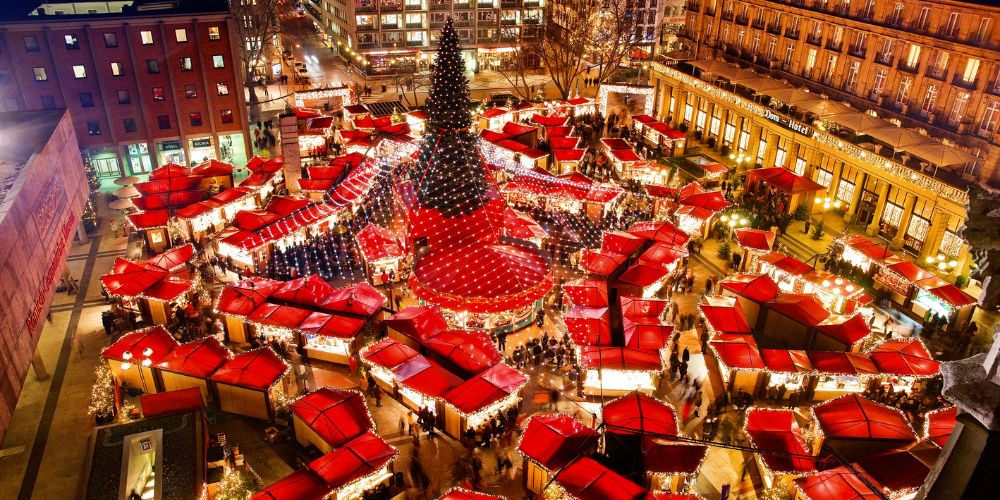
Fırın Kültürü:
Almanya’da fırın kültürü çok köklüdür. Ülke genelinde 300’den fazla farklı ekmek çeşidi bulunur. Sabahları fırından taze alınan ekmekle yapılan kahvaltılar Alman yaşamının önemli bir parçasıdır.
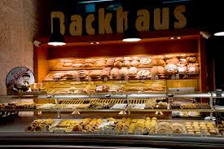
Amerika
Thanksgiving:
Şükran Günü, Kasım ayının dördüncü Perşembe günü kutlanır. Aile bireyleri bir araya gelir, fırında hindi, patates püresi ve balkabaklı turta gibi geleneksel yemekler hazırlanır. Bu günün amacı, geçmişteki bereket ve bolluk için şükretmektir.
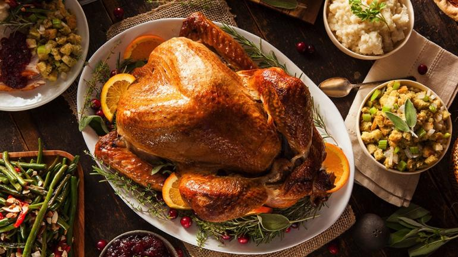
Halloween:
31 Ekim’de kutlanan Cadılar Bayramı, özellikle çocuklar için kostüm giyme, ev ev dolaşıp şeker toplama ve korku temalı süslemelerle unutulmaz bir etkinliktir. Evin dışına konan oyulmuş balkabakları bu geleneğin simgesidir.
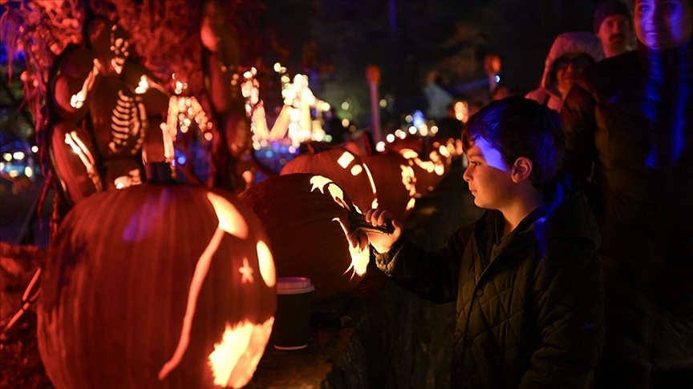
4 Temmuz:
Amerika'nın Bağımsızlık Günü olan 4 Temmuz, ülke genelinde havai fişekler, geçit törenleri, piknikler ve konserlerle kutlanır. Amerikan bayrakları ve kırmızı-beyaz-mavi renkler her yerdedir.
İngiltere
Afternoon Tea:
İngiliz kültürünün vazgeçilmezlerinden olan öğleden sonra çayı, genellikle hafif atıştırmalıklar, küçük sandviçler ve çöreklerle birlikte sunulur. Bu gelenek hem evlerde hem de özel çay salonlarında sürdürülmektedir.
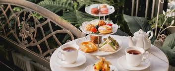
Pub Kültürü:
İngiltere’de pub’lar sadece içki içilen yerler değil, aynı zamanda insanların sosyalleştiği ve günün stresini attığı mekanlardır. Hafta sonları maç izleme, quiz geceleri gibi etkinliklerle doludur.
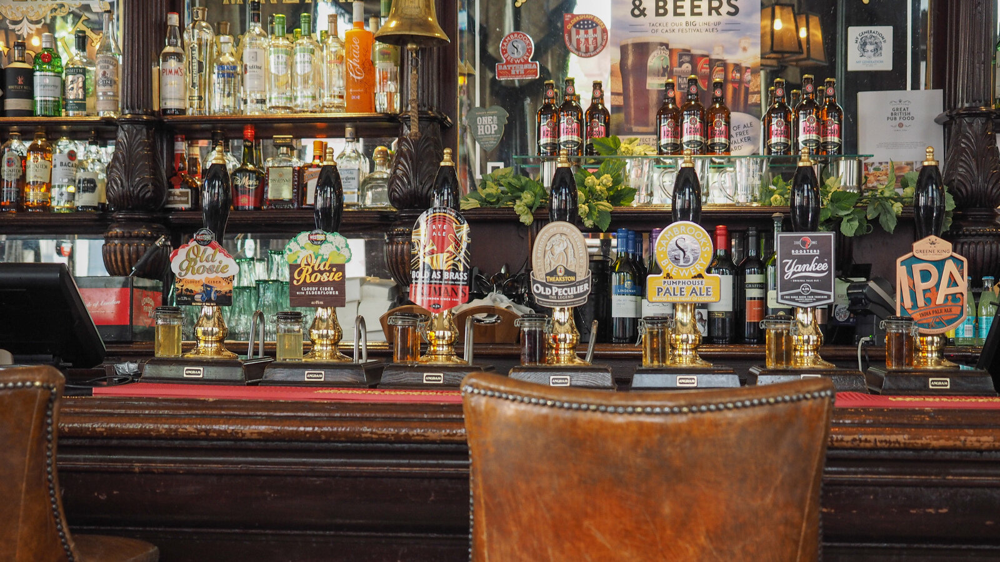
Kraliyet Törenleri:
Buckingham Sarayı önünde gerçekleşen nöbetçi değişimi gibi törenler, turistlerin ilgiyle izlediği etkinliklerdendir. Kraliyet ailesine ait kutlamalar ve anma günleri büyük önem taşır.
İtalya
Pizza & Makarna:
İtalya, dünyaca ünlü mutfağı ile tanınır. Pizza ve makarna, hem ülke içinde hem de dünya genelinde en çok sevilen yemeklerin başında gelir. Her bölgenin kendi tarifleri ve özel malzemeleri vardır. Napoli pizzası ve Bolonez makarna gibi örnekler, bu kültürün global yüzüdür.
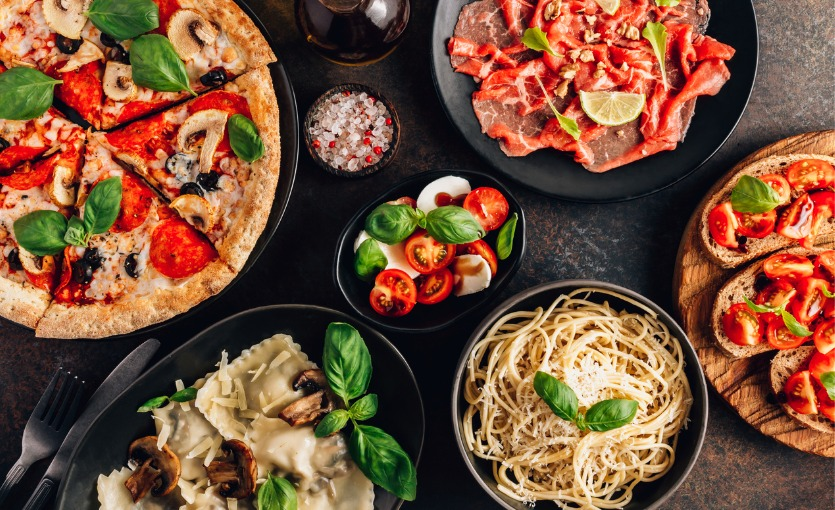
Opera:
Opera sanatı, İtalya'nın tarihi boyunca sanata ve müziğe verdiği önemi gösterir. Verdi ve Puccini gibi büyük bestecilerin yetiştiği bu ülkede, operalar genellikle tarihi tiyatrolarda sahnelenir. Opera, dramatik anlatımı müzikle harmanlayan köklü bir gelenektir.
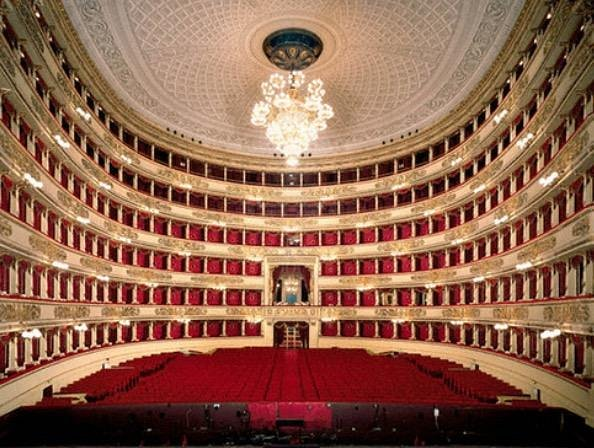
Siesta:
İtalya'da öğle saatlerinde verilen kısa uyku molasına "siesta" denir. Bu gelenek, özellikle yaz aylarında sıcağın etkisini azaltmak ve öğleden sonra daha verimli olmak için uygulanır. Bazı küçük kasabalarda öğle saatlerinde dükkanların kapanması da bu kültürün bir parçasıdır.
Kanada
Maple Şurubu:
Kanada'nın simgelerinden biri olan akçaağaç şurubu, özellikle kahvaltılarda tercih edilir. Pancake ve waffle gibi yiyeceklerin vazgeçilmez eşlikçisidir. İlkbaharda ağaçlardan elde edilen özsu kaynatılarak şuruba dönüştürülür.
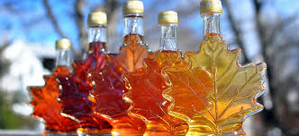
Kış Sporları:
Kanada, zengin kış sporları kültürüne sahiptir. Kayak, snowboard ve özellikle buz hokeyi, ülke genelinde oldukça popülerdir. Okullarda küçük yaşlardan itibaren buz sporları teşvik edilir ve ulusal ligler büyük ilgiyle takip edilir.
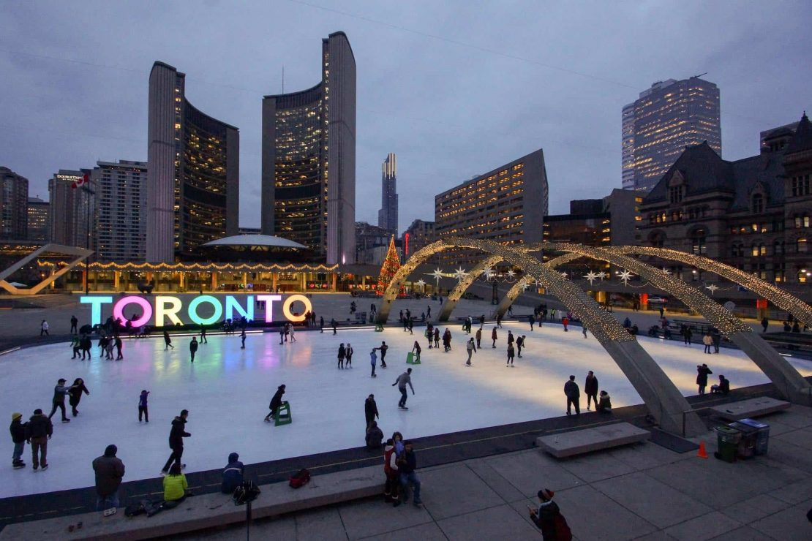
First Nations Kültürü:
Kanada’da yaşayan yerli topluluklar, zengin kültürel miraslarıyla ülke kimliğine büyük katkı sunar. Totem direkleri, geleneksel el sanatları, danslar ve doğayla uyumlu yaşam tarzı bu kültürün önemli unsurlarıdır.
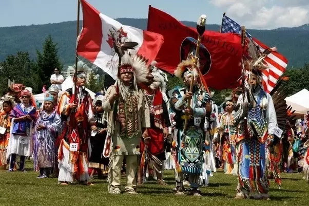
Fransa
Şarap & Peynir:
Fransa, gastronomi denince akla ilk gelen ülkelerden biridir. Yüzlerce çeşit peyniri ve bölgelere özgü şaraplarıyla, yemek kültüründe çeşitlilik ve kalite ön plandadır. Şarap ve peynir tadımı, hem sosyal hem de kültürel bir etkinlik olarak görülür.
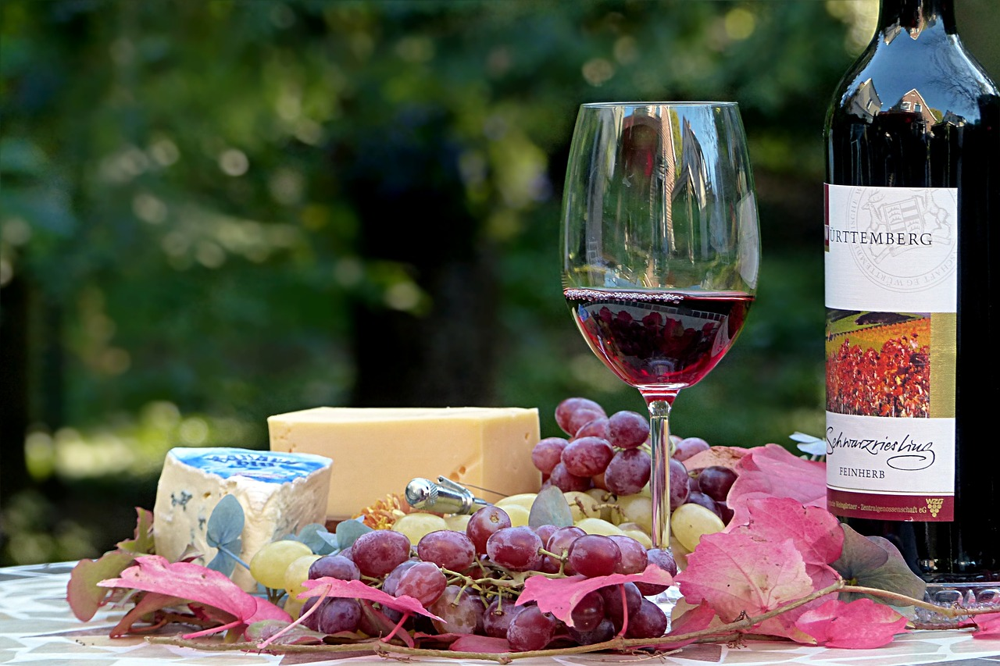
Moda:
Paris, dünya modasının kalbi kabul edilir. Haute couture’den sokak modasına kadar her düzeyde tasarımın ve stilin öncüsüdür. Paris Moda Haftası gibi etkinlikler, global moda takviminde önemli yer tutar.
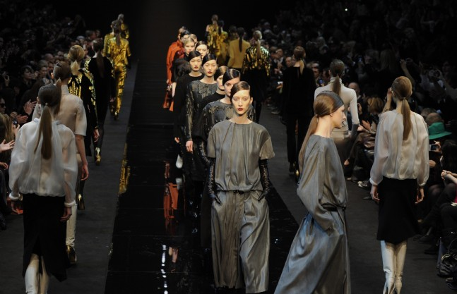
Kafeler:
Fransa'da kafeler, sadece bir şeyler içilen mekanlar değil, aynı zamanda sosyalleşme ve gözlem yapma alanlarıdır. Özellikle Paris’te kaldırım üzerindeki küçük masalarda oturmak ve kahve eşliğinde kitap okumak ya da sohbet etmek kültürel bir alışkanlıktır.
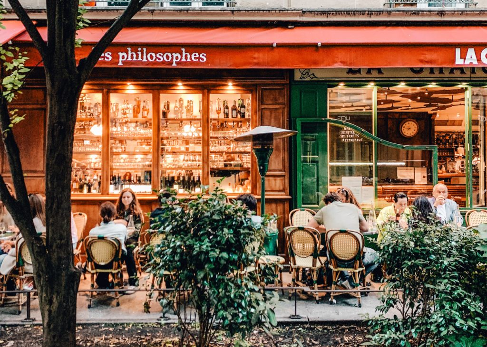
İspanya
Flamenko:
Flamenko, İspanya’nın özellikle Endülüs bölgesine özgü bir dans ve müzik türüdür. Gitar eşliğinde söylenen duygulu şarkılar ve tutkulu dans figürleriyle izleyicilere derin bir duygusal deneyim yaşatır. UNESCO tarafından kültürel miras olarak tanınmıştır.
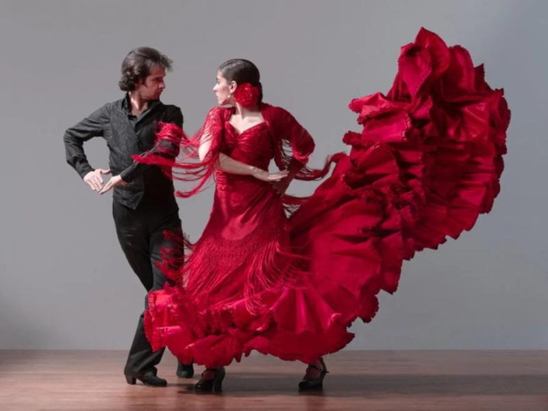
San Fermin Festivali:
Her yıl Temmuz ayında Pamplona’da düzenlenen bu festival, boğa koşuları ile ünlüdür. Katılımcılar dar sokaklarda serbest bırakılan boğaların önünde koşar. Etkinlik, Aziz Fermin’i anmak amacıyla düzenlenmektedir ve geleneksel kıyafetlerle yapılan geçitlerle de dikkat çeker.
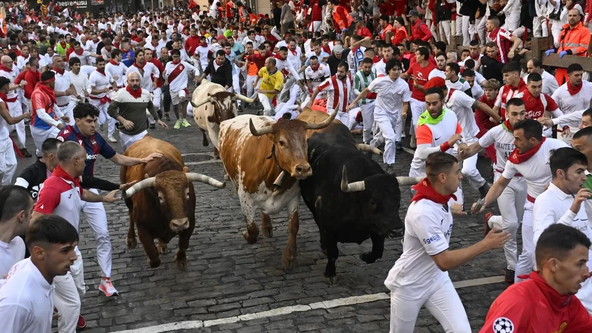
Tapas:
Tapas, İspanya’ya özgü küçük porsiyonlu yemeklerdir. Arkadaş ortamlarında paylaşılarak tüketilir ve sosyal yeme alışkanlıklarının temelini oluşturur. Deniz ürünlerinden sebzelere kadar çok çeşitli içeriklerle hazırlanabilir.
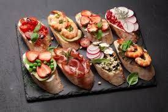